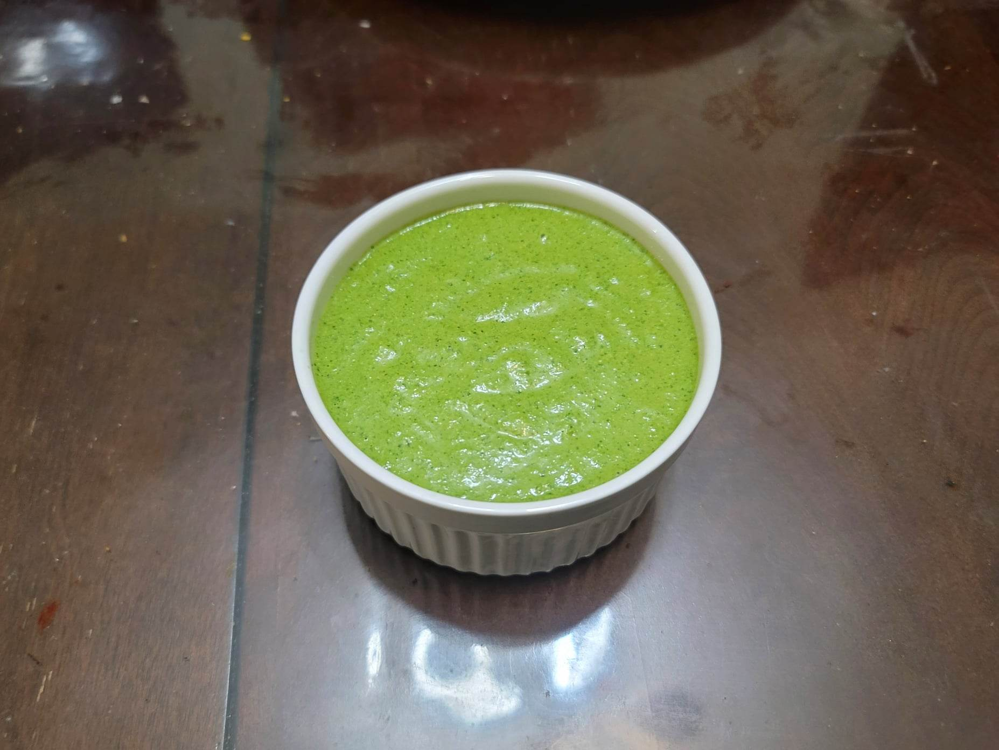

Ají Verde Sauce

Ingredients:
- 2 Jalapeños or Serranos, deseeded to preference
- 2 bunches Cilantro
- 1 cloves Garlic
- 1 Scallion
- 1/4 cup Queso fresco
- 1 tbsp Lime juice
- 1 tbsp Olive oil
- 1 tbsp Ají Amarillo paste
- 2 tsp Huacatay paste
- 1/4 tsp Salt
- 1/4 tsp Black pepper
- 1/2 cup Mayonnaise
Instructions:
- Combine all ingredients into a blender and blend until smooth. Serve with pollo a la brasa, or any chicken.